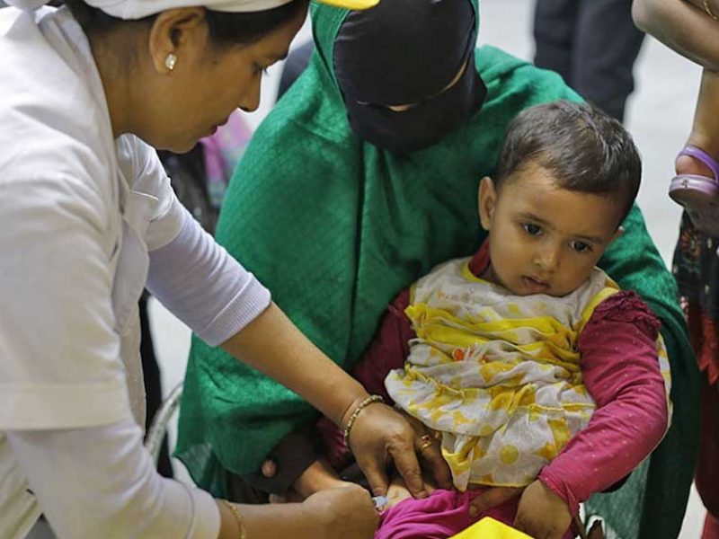

জাঙ্গালপাড়া সিসি (বগুড়া): প্রকাশিত: ২৬ অক্টোবর ২০২৫, শনিবার
আগামী ১০ নভেম্বর ২০২৫ ইং তারিখে জাঙ্গালপাড়া কমিউনিটি ক্লিনিক-এ ৯ মাস থেকে ১৫ বছর বয়সী সকল ছেলে-মেয়ে শিশুকে TCV (টাইফয়েড) টিকা প্রদান করা হবে। টাইফয়েড প্রতিরোধে এই টিকা অত্যন্ত কার্যকর, যা শিশুর রোগ প্রতিরোধ ক্ষমতা বৃদ্ধি করে।
ক্লিনিক কর্তৃপক্ষ জানিয়েছেন, টিকা গ্রহণের জন্য শিশুদের জন্ম সনদসহ উপস্থিত হতে অনুরোধ করা হচ্ছে। জন্ম সনদ না থাকলে রেজিস্ট্রেশনের জন্য সরাসরি ক্লিনিকে যোগাযোগ করা যাবে।
“প্রত্যেক শিশুর জন্য টাইফয়েড টিকা অত্যন্ত গুরুত্বপূর্ণ। সময়মতো টিকা দিলে এই রোগের ঝুঁকি অনেক কমে যায়।”
💉 আপনার শিশুকে টাইফয়েড টিকা দিন — সুস্থ ভবিষ্যৎ গড়ুন!
✍️ মোঃ আতিকুর রহমান শেখ
📞 সিএইচসিপি
📞 জাঙ্গালপাড়া কমিউনিটি ক্লিনিক
📞 কাহালু, বগুড়া